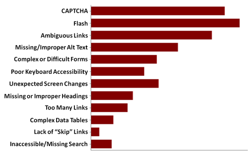

Accessibility on the Cheap
What is Accessibility?
People with:
- auditory
- cognitive
- neurological
- physical
- speech
- visual
disabilities can perceive, understand, navigate, and interact with the Web
Side Benefits
- people using mobile phones, smart watches, smart TVs, and other devices with small screens, different input modes, etc.
- older people with changing abilities due to ageing
- people with "temporary disabilities" such as a broken arm or lost glasses
- people with "situational limitations" such as in bright sunlight or in an environment where they cannot listen to audio
Business Case
Case studies show that accessible websites have better search results, reduced maintenance costs, and increased audience reach, among other benefits.Why?
Web accessibility starts with well-structured semantic HTML.
Brief Kitten Interlude
Accessibility is Never a Top Priority
(Until there's a lawsuit)
So what can we do?
The Basics
Semantic Structure
se·man·tic
/səˈman(t)ik/
adjective
relating to meaning in language or logic.
Semantic structure is also extremely important for accessibility. It provides the framework for the information on the page.
Don't Do This
Do This
Don't Do This
Page Title
Do This
Page Title
Alternative Content
Don't Do This

Do This
Defining Interaction
Don't Do This
First Name
Do This
Less Basic
Aria
(Accessible Rich Internet Applications)
Defines a way to make Web content and Web applications more accessible to people with disabilities.
Common Mistakes
- Images should have valid alt attributes.
- Repetitive links
- Form controls should have a label.
- Color should not be essential.
- No JavaScript links should be used.
- Data tables do not have marked headers.
- Skip navigation links not provided.
- Don't remove focus and active styles without providing an alternative.
- Don't use a link for a button.
- Click Here
WebAIM Survey
How to test your accessibility
- Mac Voiceover - Command + F5
- Web Accessibility Evaluation Tool
- WAVE Chrome & Firefox extensions
Q&A
Ask me things I don't know.
Tell me what I got wrong.